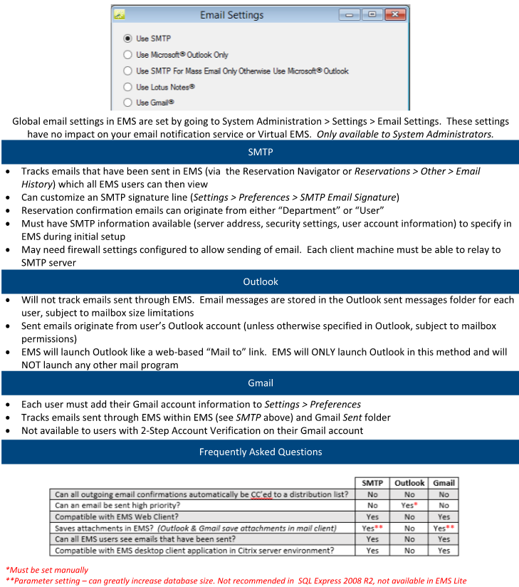

On the EMS menu bar, click System Administration > Settings > Email Settings.
The Email Settings dialog box opens.

Email Settings Dialog Box
Use one of the following methods to configure email:
-
Leave Use SMTP selected, and then enter the appropriate values for Mode, Server, and Port in the SMTP Email panel.
-
Select Use Microsoft Outlook Only.
-
Select Use SMTP for Mass Email Only Otherwise Use Microsoft Outlook, and then enter the appropriate values for Mode, Server, and Port in the SMTP Email panel. Select this third option if you want to use Outlook or Lotus Notes for all of your individual emails but use the mass email function found in the Browser and the Calendar. If you select this option and you use Lotus Notes, then individual emails open in the mass email window, but they are still sent via Lotus Notes.
-
Select Use Lotus Notes. (Available only if Lotus Notes is installed on your computer.)

Click OK.